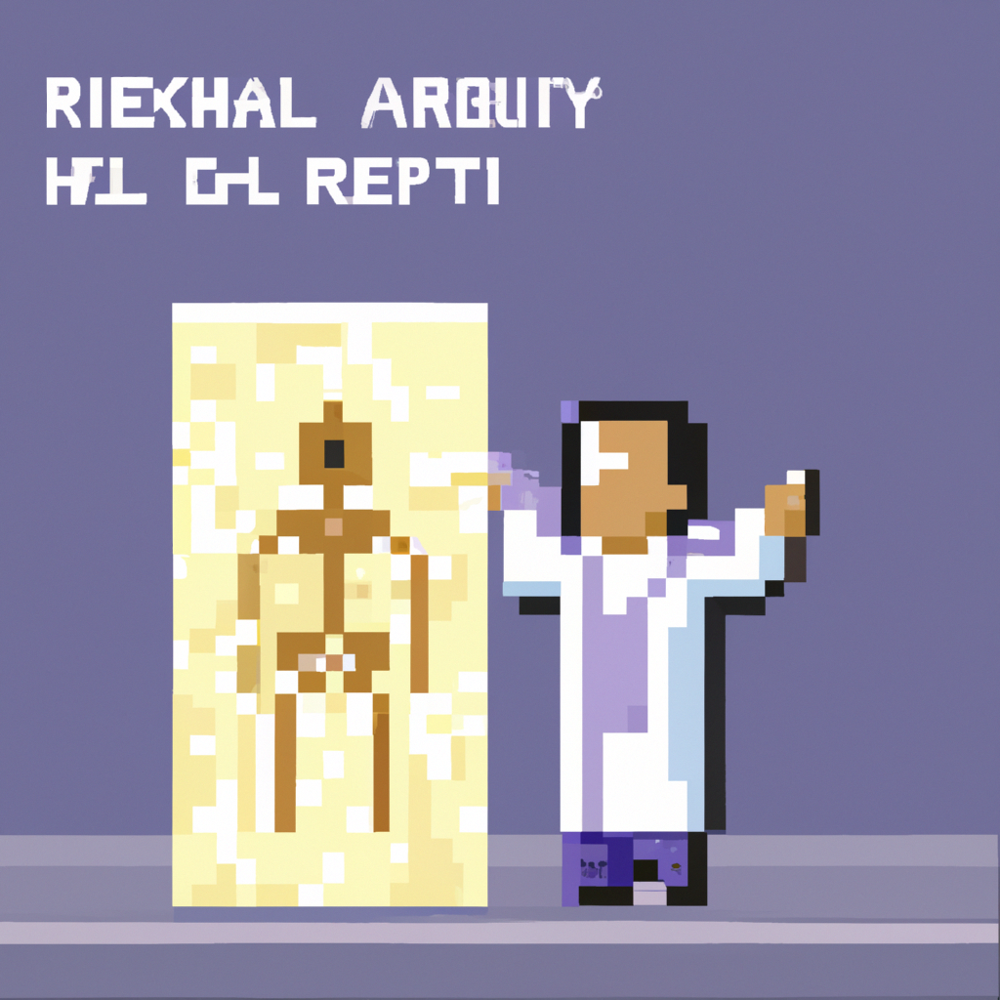

Why AI will never replace the radiologist
As one of the most popular applications of machine learning, AI has been making its way into radiology. While AI can help improve accuracy and efficiency in radiology, there are many reasons why AI will never replace the radiologist.
First of all, AI relies on pattern recognition. This means that AI is only as accurate as the data it is trained on. AI can get confused if the data is incomplete or if the patterns it is looking for aren’t consistent. Radiologists, on the other hand, are able to think outside the box and use their experience and intuition to make decisions. AI will never be able to replicate this.
Second, AI lacks the human touch. Radiologists are able to better understand the patient’s medical history and physical condition. This is something that AI cannot do. AI also can’t understand the nuances of human language, which can be important in interpreting images. A radiologist is able to take into account the patient’s emotions and feelings about their condition.
Finally, AI can be biased. AI algorithms are only as good as the data they are trained on. If the data used to train the algorithm is biased, then the algorithm will be biased as well. This could lead to misdiagnoses or incorrect treatments. Radiologists are trained to look for bias and take it into account when making decisions.
In conclusion, AI will never replace the radiologist. AI can be a helpful tool, but it lacks the human touch, intuition, and experience that radiologists possess. Radiologists are able to make decisions that are tailored to the individual patient and take into account the patient’s medical history and emotional state. AI will never be able to replicate this.